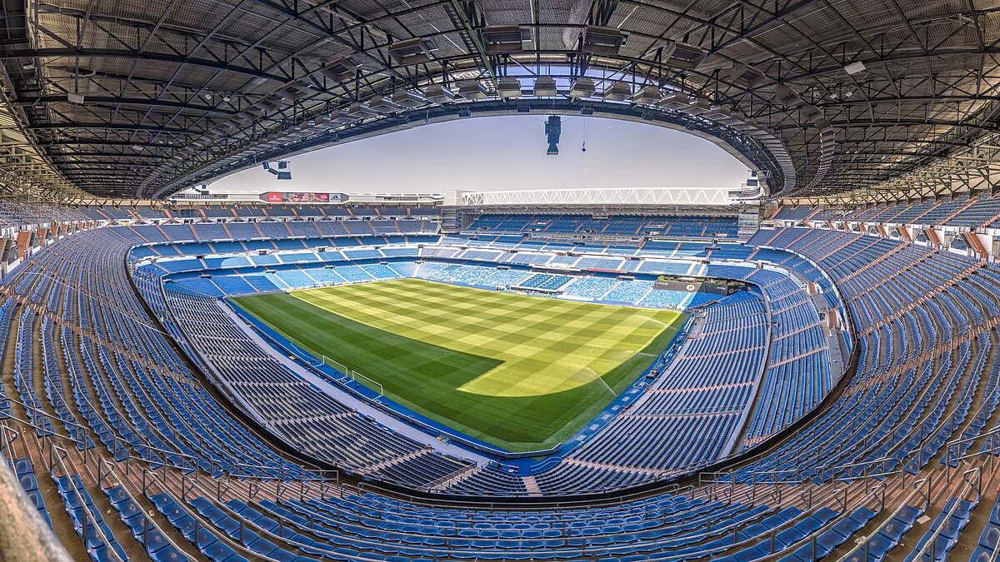

Selamat Datang di Dunia Real Madrid
Jelajahi sejarah, prestasi, dan pemain legendaris klub terbaik dunia.
Jelajahi SekarangSejarah Real Madrid
Real Madrid didirikan pada 6 Maret 1902 oleh Juan Padrós dan Julián Palacios di Madrid, Spanyol. Klub ini awalnya dikenal sebagai Madrid Football Club sebelum mendapatkan gelar "Real" (kerajaan) dari Raja Alfonso XIII pada tahun 1920.
Real Madrid mulai menorehkan prestasi besar sejak tahun 1950-an, dipimpin oleh Alfredo Di Stéfano, Ferenc Puskás, dan Francisco Gento, yang membawa klub memenangkan lima gelar Liga Champions berturut-turut.
Skuad & Pelatih
Real Madrid memiliki skuad bertabur bintang dengan pemain seperti Vinícius Jr, Jude Bellingham, Luka Modrić, dan Thibaut Courtois. Klub ini dikenal karena merekrut pemain-pemain terbaik dunia, seperti Cristiano Ronaldo, Zinedine Zidane, dan Raúl González di masa lalu.
Tim ini saat ini diasuh oleh Carlo Ancelotti, pelatih berpengalaman yang telah membawa Real Madrid meraih berbagai gelar bergengsi.
Carlo Ancelotti - Pelatih Real Madrid
Prestasi & Trofi
- 14x Liga Champions UEFA (terbanyak dalam sejarah)
- 35x La Liga (rekor domestik di Spanyol)
- 20x Copa del Rey
- 5x Piala Dunia Antarklub FIFA
- 4x Piala Super UEFA
Stadion Santiago Bernabéu
Stadion Santiago Bernabéu, yang diresmikan pada 14 Desember 1947, adalah markas Real Madrid dengan kapasitas lebih dari 81.000 penonton. Stadion ini telah menjadi saksi berbagai pertandingan bersejarah dan menjadi simbol kejayaan klub.
Renovasi besar yang dilakukan sejak 2019 menambahkan atap retractable, teknologi modern, serta peningkatan fasilitas bagi para penggemar.
Stadion Santiago Bernabéu
Stadion Santiago Bernabéu, yang diresmikan pada 14 Desember 1947, adalah markas Real Madrid dengan kapasitas lebih dari 81.000 penonton...
Rivalitas
El Clásico antara Real Madrid dan Barcelona adalah salah satu pertandingan terbesar di dunia. Persaingan ini dipenuhi dengan sejarah, persaingan sengit, dan momen-momen luar biasa.
Selain itu, Real Madrid juga memiliki rivalitas dengan Atlético Madrid dalam Derby Madrid, yang selalu menghadirkan pertandingan yang intens dan bersejarah.
Galeri & Fakta Unik
Fakta unik tentang Real Madrid:
- Klub pertama yang memenangkan lima Liga Champions berturut-turut (1956-1960).
- Belum pernah terdegradasi dari La Liga sejak kompetisi dimulai.
- Trio legendaris "BBC" (Bale, Benzema, Cristiano) pernah mendominasi sepak bola Eropa.